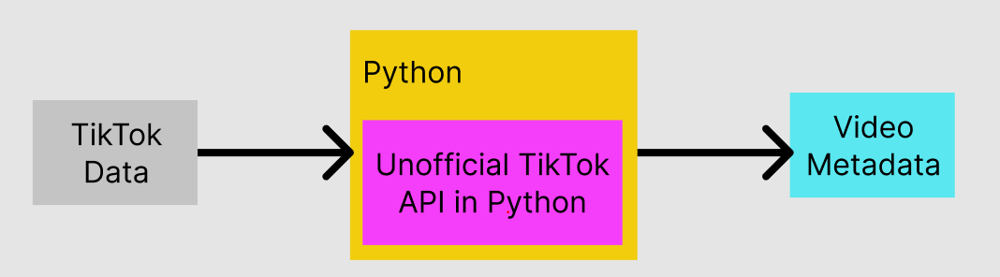

What's in the Data Download file?
Data ≠ Information
As others have noted, just because data is available
doesn't mean it is informative.
TikTok delivers downloads in human-readable" .txt files,
and "machine-readable" .json files. However, both file types are highly nested .
The nested nature of these files makes it difficult to view the actual contents. We put together
a tree navigator to explore the different sections of the TikTok Data Download, as wll as its
completeness. As you can see, the completeness and quality of the data range widely.
The Hierarchy of TikTok's User Data Download File
For the best viewing experience, please view this full screen on a desktop
We can view the data hierarchy available from the downloaded TikTok data.
The user doesn't interact with all parts of TikTok, so some of the data
were blank and we could not determine the data that was available.
Legend
|
|
Mutliple Data, each entry share the same fields in child nodes
|
|
|
Data Node (can represent a group of data or a value)
|
|
|
Data Node like above, but specifically marked for the Ads data
|
|
|
(Fading dots on mouseover)
More sub-data available, click to reveal more of the data tree
|
The details (once you're able to access them) are actually quite granular.
Under the Activity section of the data, you can see your entire history of videos and the things you follow (users, sounds, hashtags),
including the date and time you followed them. Also accessible are search terms, comments, and
every login instance (date, time, and IP address).
None of this quite surprised us or Oski: these are all things you do on the app, after all. But
seeing it all in one place, in this level of detail and magnitude made obvious the sheer scope
of the surveillance that occurs anytime Oski uses the TikTok app. Even though it was not our
data, it felt creepy!
Interestingly, we noticed that the data about Ads were missing
(see Ads and Data for the data that they supposedly supply) ... but Oski knows
he's definitely seen ads. Other important piece of data missing included the authors and the
hashtags associated with the videos watched.
Data Scraping Process
Using the TikTok API (and a little help from our Capstone friends), we scraped video details -
including hashtags, sounds, and author handles - for Oski's viewing history. The process in
general looked something like this:

We use Python to take each entry of the user's Activity's Video Browsing History and feed the VideoLink
of each entry to the Unofficial TikTok API.
The upshot: TikTok makes it possible to get much of your personal data,
and it is quite detailed. However, we had to get creative to access the video and advertising
details.